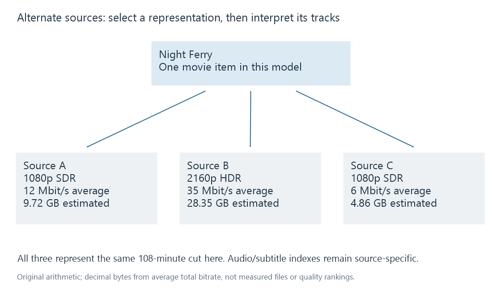

Alternate media versions
Alternate media versions provide different playable representations of a catalogue item, each with its own technical properties and resource identity.
One movie can have several playable sources: a 1080p encode for a small display, a 4K HDR encode, or a source with another audio presentation. An alternate version gives the library another way to play the item.
The catalogue item and its sources have different jobs. The item supplies the film's identity and browsing description. Each source supplies the actual container, streams, duration and location used for playback.

Compare the whole source
The fictional sources below represent the same 108-minute cut:
| Source | Video presentation | Average total bitrate assumed for this example | Approximate bytes from bitrate × duration |
|---|---|---|---|
| A | 1080p SDR | 12 Mbit/s | 9.72 GB |
| B | 2160p HDR | 35 Mbit/s | 28.35 GB |
| C | 1080p SDR, lower bitrate | 6 Mbit/s | 4.86 GB |
The estimates use decimal units and a constant average total bitrate: bytes = bits per second × 6,480 seconds ÷ 8. They are arithmetic examples, not measurements or quality scores.
Source B contains more pixels and uses more bytes under these assumptions. Whether it is the most useful source depends on the receiving display, supported video/audio formats and available delivery bandwidth. Bitrate alone cannot establish visual quality, and a 4K label cannot establish whether the source is HDR or SDR.
Emby's movie naming documentation describes recognized multi-version grouping. The API's MediaSourceInfo describes individual sources. Neither a filename suffix nor a display label replaces the technical information discovered from the media.
Track selections belong to the chosen source
Suppose source A has English audio at stream index 1 and French audio at index 2. Source B might have English at index 2 and a commentary at index 3. The number 2 is an index within a particular representation, not a global identifier for French.
The same issue applies to subtitles and chapters. Their availability, indexes and timings can differ between versions. A player switching sources needs to interpret the target source's tracks rather than copying an old index without context.
The public playback-progress model includes both item and media-source identifiers. That distinction makes sense: knowing which movie is playing does not, by itself, identify which resource's streams and timeline are in use.
The useful label names the choice
A label such as 1080p SDR — stereo or 4K HDR — surround helps a viewer understand what changes. A label such as final-v2 records production history without conveying the available presentation.
If two sources are different cuts, a cut label belongs in that choice too. Their shared work identity does not make their timestamps interchangeable. For two encodes of the same sequence, equal scene timing is a reasonable thing to verify; it is not guaranteed simply because both were grouped under one poster.